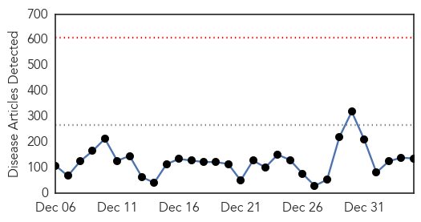
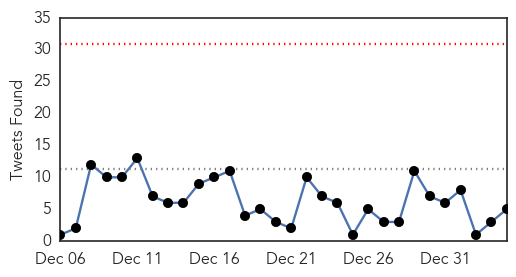

Ebola
30-Day Web Trend
0 alerts, 0 warnings

30-Day Twitter Trend
0 alerts, 0 warnings

Article Locations

Article Confidences
Top Articles:
- 1.000
- The Ebola Virus: What's next for the virus?
- 1.000
- Ebola-struck UK nurse in `critical` condition
- 1.000
- U.S. health-care worker exposed to Ebola arrives in Nebraska for observation
- 1.000
- US Health Care Worker Under Observation for Ebola
- 1.000
- UK nurse with Ebola in critical condition
- 1.000
- Ebola-struck UK nurse in 'critical' condition
- 1.000
- US medical worker exposed to Ebola overseas arrives in Omaha - MyNorthwest
- 1.000
- US Medical Worker Exposed to Ebola Overseas Arrives in Omaha
- 1.000
- EU plans to hold international conference on fight against Ebola virus
- 0.999
- Patient Exposed To Ebola Hospitalized In Omaha
- 0.999
- Patient Exposed To Ebola Hospitalized In Omaha
- 0.999
- Patient Exposed To Ebola Hospitalized In Omaha
- 0.999
- American exposed to Ebola coming to Nebraska
- 0.999
- Ebola-infected UK nurse fighting for her life
- 0.999
- Why isn't the Ebola outbreak over yet?
- 0.999
- Ebola-infected UK nurse fighting for her life
- 0.999
- Ebola in the UK: Pauline Cafferkey, the British nurse infected with virus, remains in a critical condition in Royal Free Hospital
- 0.999
- US Health Care Worker, Possibly Exposed To Virus In Sierra Leone, Due In Omaha Hospital For Observation
- 0.999
- Edmonton Aid Worker To Battle Psychological Toll Of Virus
- 0.999
- Victory against Ebola within our reach’ -- new UN mission chief
- 0.999
- Ebola crisis: Health authorities set up screening facilities at Papua New Guinea airport
- 0.999
- Ebola crisis: Experts warn against complacency in fight to contain worst outbreak in history
- 0.999
- Ebola-struck UK nurse in 'critical' condition
- 0.999
- UPDATE 1-Sierra Leone seeks U.S. military help to fight Ebola
- 0.998
- British Nurse Diagnosed with Ebola is Now Battling for Life Despite Experimental Drug Treatment
- 0.998
- Ebola-exposed healthcare worker arrives in Nebraska
- 0.998
- U.S. Medical Worker Exposed To Ebola Transferred To Nebraska
- 0.998
- Ebola Response by U.S. Was Deadly Slow, Expert Says
- 0.998
- Ebola – infected British nurse fights for her life in London hospital
- 0.998
- First Ebola patient diagnosed in Britain in critical condition;
- 0.998
- American exposed to Ebola arrives at Nebraska facility for monitoring
- 0.998
- Ebola: A ticking bomb?
- 0.998
- Health care worker exposed to Ebola virus arrives in Omaha
- 0.998
- In Sierra Leone, pregnant woman tests Ebola’s limits>
- 0.997
- South Korean medic's initial test negative for Ebola
- 0.997
- Patient possibly exposed to Ebola due at Nebraska hospital for observation
- 0.997
- Ebola-infected UK nurse fights for life
- 0.997
- U.S. health care worker possibly exposed to Ebola headed to Nebraska
- 0.997
- U.K. nurse with Ebola in critical condition
- 0.997
- Korean medic tests negative for Ebola
- 0.997
- US Medical Worker Exposed To Ebola Headed To Omaha
- 0.997
- Ebola nurse Pauline Cafferkey fights for her life as her health deteriorates after contracting killer virus
- 0.997
- A Patient Possibly Exposed To Ebola Is Heading To Nebraska For Observation
- 0.997
- Health care worker exposed to Ebola arrives in Nebraska
- 0.996
- Somalia denies registering first Ebola case
- 0.996
- Pauline Cafferkey is said to be in critical condition now -
- 0.995
- the edge of knowledge
- 0.995
- British nurse with Ebola is now critical, hospital confirms
- 0.995
- Proper arrangements for Ebola checks in place, says PM
- 0.995
- New Ebola lockdown in Sierra Leone as airport checks upped
Showing top 50 articles...
Top Tweets:
- 0.901
- RT: Ebola Update: 20,206 confirmed, probable & suspected cases reported in 3 most affected countries, and 7,905 deaths. EbolaRespo…
- 0.887
- http://t.co/3wQtErh6Na ebola infectious disease
- 0.755
- U.S. Health Worker Exposed to Ebola in Sierra Leone to Be Monitored in Nebraska http://t.co/3NiNZvza2r
- 0.732
- RT: @PIH mobile lab for Ebola now in Kono District Sierra Leone. Team is fighting hotspot full force http://t…
- 0.729
- RT: U.S. Health Worker Exposed to Ebola in Sierra Leone to Be Monitored in Nebraska http://t.co/exsKZ6Lbkv
- 0.698
- RT: Ebola Diary On the Ground in Sierra Leone Medpage Today-Kimmie Pringle MD an Epidemic Intelligence Service off..http://…
- 0.652
- The 2014 Ebola Outbreak and Mental Health Current Status and Recommended Response http://t.co/iQ6hEmEdkB
- 0.651
- Ebola Snapshot, 22 December ebolaresponse http://t.co/uQUHuiEQKD
- 0.642
- Spread of Ebola continues with Sierra Leone worst hit http://t.co/jOTPdMtEfX ElbowOutEbola http://t.co/6auo6N4WL3
- 0.587
- A History of Ebola in 24 Outbreaks http://t.co/mUWiL1l8Or
Influenza
30-Day Web Trend
1 alerts, 0 warnings

30-Day Twitter Trend
7 alerts, 0 warnings

Article Locations

Article Confidences

Top Articles:
- 0.998
- Flu season 2015 should be taken seriously
- 0.997
- Flu declared an epidemic; Aiken County cases on the rise
- 0.996
- Flu cases slam Colorado hospitals; assisted-living centers hit hard
- 0.983
- New flu strain afflicts Palm Beachers
- 0.980
- Flu cases setting records across Minnesota
- 0.980
- Fauci: 2015 Will be ‘Bad Year’ for the Flu
- 0.980
- CDC Recommends Antiviral Drugs For At-Risk Patients
- 0.980
- CDC Recommends Antiviral Drugs For At-Risk Patients
- 0.971
- Flu concerns in New Mexico
- 0.963
- North Alabama's northern neighbor among states most affected by flu season
- 0.928
- Reporting Of Bird Flu Incidences In Backyard Poultry Has The State Agriculture Department On Its Toes
- 0.916
- Flu Season Will be 'Significant' With Weak Vaccine, Tamiflu Shortages
- 0.891
- Flu sees Iowa hospitals tighten visitation rules
- 0.802
- Avian Flu Outbreak in Washington State Backyard Poultry
- 0.795
- Pharmacist recommends getting ahead of the flu while you can
Top Tweets:
-
No tweets found for Jan 04, 2015